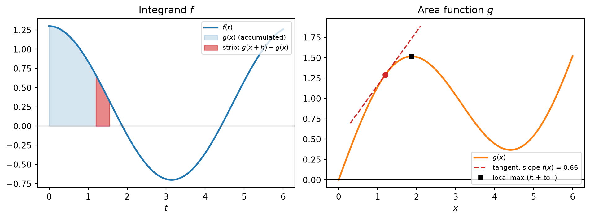
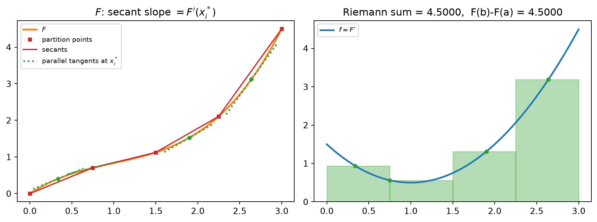
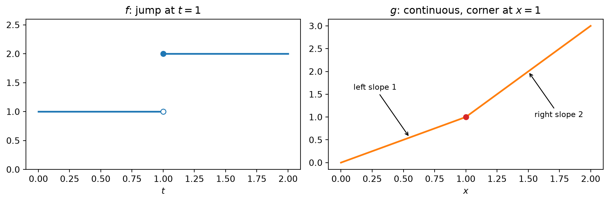

flowchart LR A["Riemann sums<br/>define the integral"] --> B["Area function<br/>g(x) = integral of f from a to x"] B --> C["FTC Part 1<br/>g' = f"] C --> D["MVT corollary:<br/>F' = g' implies F = g + C"] D --> E["FTC Part 2<br/>integral of f = F(b) - F(a)"] A --> F["Telescoping sum<br/>+ MVT on each piece"] F --> E E --> G["Net Change Theorem<br/>integral of F' = total change of F"] C --> H["Chain rule:<br/>variable limits u(x), v(x)"]
Integrals: The Fundamental Theorem of Calculus
Accumulate, then differentiate: you get back what you accumulated
The definite integral was built from Riemann sums, and the derivative was built from difference quotients. The two constructions look unrelated, but they undo each other. The Fundamental Theorem of Calculus (FTC) states this in two directions. Part 1 says that if you accumulate a continuous \(f\) from a fixed point up to \(x\) and then differentiate with respect to \(x\), you get \(f(x)\) back. Part 2 says that if you integrate a derivative \(F'\) over \([a,b]\), you get the net change \(F(b)-F(a)\). Part 2 can be reached in two independent ways, from Part 1 or directly from Riemann sums and the Mean Value Theorem. Both routes are worth knowing, because each one shows a different reason the theorem is true.
1 The Area Function
1.1 Definition
Let \(f\) be continuous on \([a,b]\). Define \[ g(x) = \int_a^x f(t)\,dt, \qquad a \le x \le b. \] The upper limit is the variable, so \(g\) is a function, not a number. It records how much of \(f\) has accumulated from \(a\) up to \(x\) (net, with sign). The integration variable \(t\) is a dummy variable. It must be a different letter from the limit \(x\), because \(x\) is fixed while \(t\) runs over \([a,x]\).
Two values are immediate: \[ g(a) = 0, \qquad g(b) = \int_a^b f(t)\,dt. \]
1.2 Reading \(g\) from the graph of \(f\)
Since \(g\) adds up signed area as \(x\) moves right, the shape of \(f\) controls the shape of \(g\):
| Behavior of \(f\) | Behavior of \(g\) |
|---|---|
| \(f > 0\) | \(g\) increasing |
| \(f < 0\) | \(g\) decreasing |
| \(f\) changes sign from \(+\) to \(-\) | \(g\) has a local maximum |
| \(f\) changes sign from \(-\) to \(+\) | \(g\) has a local minimum |
| \(f\) has a local extremum | \(g\) has an inflection point |
This table is exactly what one would expect if \(g' = f\). Part 1 confirms that this is the case.

1.3 Continuity comes for free
Even before differentiating, \(g\) is continuous, and this needs much less than continuity of \(f\). If \(|f| \le M\) on \([a,b]\), then \[ |g(x+h) - g(x)| = \left|\int_x^{x+h} f(t)\,dt\right| \le M|h|. \] So \(g\) is Lipschitz continuous whenever \(f\) is merely bounded and integrable. Integration smooths: it raises regularity by one level. A bounded jumpy \(f\) gives a continuous \(g\) with corners, and a continuous \(f\) gives a differentiable \(g\).
2 FTC Part 1
ImportantTheorem (FTC, Part 1)
If \(f\) is continuous on \([a,b]\), then \(g(x)=\int_a^x f(t)\,dt\) is continuous on \([a,b]\), differentiable on \((a,b)\), and \[ g'(x) = f(x). \] In Leibniz notation, \[ \frac{d}{dx}\int_a^x f(t)\,dt = f(x). \]
2.1 Why it is true
Write the difference quotient of \(g\): \[ \frac{g(x+h)-g(x)}{h} = \frac{1}{h}\int_x^{x+h} f(t)\,dt. \] The right-hand side is the average value of \(f\) on the short interval between \(x\) and \(x+h\). On that interval \(f\) attains a minimum \(m_h\) and a maximum \(M_h\) (Extreme Value Theorem), and the average lies between them: \[ m_h \le \frac{1}{h}\int_x^{x+h} f(t)\,dt \le M_h. \] As \(h \to 0\) the interval shrinks to the single point \(x\). Because \(f\) is continuous, both \(m_h\) and \(M_h\) approach \(f(x)\), and the Squeeze Theorem gives \(g'(x) = f(x)\).
In words: the rate at which accumulated area grows equals the current height of the integrand. A strip of width \(h\) at position \(x\) has area about \(f(x)\,h\), so the growth per unit width is \(f(x)\).
2.2 Where continuity is used
Continuity enters at exactly one step: \(m_h, M_h \to f(x)\). The conclusion is pointwise. If \(f\) is continuous at a particular point \(x_0\) (even if not elsewhere), the same argument gives \(g'(x_0) = f(x_0)\). At a jump discontinuity the argument fails, and so does the conclusion (see the section on hypotheses below).
2.3 Variable limits and the chain rule
If the upper limit is a differentiable function \(u(x)\), then \(\int_a^{u(x)} f(t)\,dt = g(u(x))\), and the chain rule gives \[ \frac{d}{dx}\int_a^{u(x)} f(t)\,dt = f\big(u(x)\big)\,u'(x). \] If both limits move, split at a fixed point \(c\) and flip the lower piece: \[ \int_{v(x)}^{u(x)} f(t)\,dt = \int_c^{u(x)} f(t)\,dt - \int_c^{v(x)} f(t)\,dt, \] so \[ \boxed{\;\frac{d}{dx}\int_{v(x)}^{u(x)} f(t)\,dt = f\big(u(x)\big)\,u'(x) - f\big(v(x)\big)\,v'(x).\;} \]
NoteWorked examples
- \(\displaystyle \frac{d}{dx}\int_1^{x^4} \sec t\,dt = \sec(x^4)\cdot 4x^3.\)
- \(\displaystyle \frac{d}{dx}\int_x^{5} \sqrt{1+t^3}\,dt = -\sqrt{1+x^3}\), since moving the variable to the lower limit flips the sign.
- \(\displaystyle \frac{d}{dx}\int_{\sin x}^{x^2} e^{t^2}\,dt = e^{x^4}\cdot 2x - e^{\sin^2 x}\cos x.\)
- \(\displaystyle \frac{d}{dx}\int_0^{1} t^2\,dt = 0\), because neither limit depends on \(x\) and the integral is a constant.
The variable \(x\) must never appear inside the integrand in these formulas. If it does, as in \(\int_0^x (x-t)f(t)\,dt\), first pull out what depends only on \(x\): \[ \int_0^x (x-t)f(t)\,dt = x\int_0^x f(t)\,dt - \int_0^x t f(t)\,dt, \] and then differentiate using the product rule and Part 1: \[ \frac{d}{dx}\left[\cdot\right] = \int_0^x f(t)\,dt + x f(x) - x f(x) = \int_0^x f(t)\,dt. \]
2.4 Functions defined by integrals
Part 1 guarantees that every continuous \(f\) has an antiderivative, namely \(g\), even when no elementary formula for it exists. Several functions that matter in probability and communications are defined exactly this way: \[ \operatorname{erf}(x) = \frac{2}{\sqrt{\pi}}\int_0^x e^{-t^2}\,dt, \qquad \Phi(x) = \frac{1}{2} + \frac{1}{\sqrt{2\pi}}\int_0^x e^{-t^2/2}\,dt. \] Part 1 gives their derivatives immediately, with no closed form required: \[ \operatorname{erf}'(x) = \frac{2}{\sqrt{\pi}}\,e^{-x^2}, \qquad \Phi'(x) = \frac{1}{\sqrt{2\pi}}\,e^{-x^2/2}. \] The Gaussian tail function \(Q(x) = 1 - \Phi(x)\), used for error probabilities such as \(P_b = Q\!\left(\sqrt{2E_b/N_0}\right)\) for BPSK, therefore satisfies \[ Q'(x) = -\frac{1}{\sqrt{2\pi}}\,e^{-x^2/2} < 0. \] So \(Q\) is strictly decreasing, and with the chain rule the sensitivity of the error probability to SNR follows directly: \[ \frac{d}{d\gamma}\,Q\!\left(\sqrt{2\gamma}\right) = -\frac{1}{\sqrt{2\pi}}\,e^{-\gamma}\cdot\frac{1}{\sqrt{2\gamma}}. \] These are statements about functions that cannot be written in elementary terms, obtained without ever evaluating an integral.
3 FTC Part 2
ImportantTheorem (FTC, Part 2)
If \(f\) is continuous on \([a,b]\) and \(F\) is any antiderivative of \(f\) there, meaning \(F' = f\), then \[ \int_a^b f(x)\,dx = F(b) - F(a) = \Big[F(x)\Big]_a^b. \]
This is the same formula as the Evaluation Theorem. What is new here is that Part 2 can now be derived from Part 1, which shows that the two parts are a single fact seen from two sides.
3.1 Route A: from Part 1
By Part 1, \(g(x) = \int_a^x f(t)\,dt\) is an antiderivative of \(f\). \(F\) is another one. Two functions with the same derivative on an interval differ by a constant (a corollary of the Mean Value Theorem), so \(F(x) = g(x) + C\) on \([a,b]\). The constant cancels in the difference: \[ F(b) - F(a) = \big(g(b)+C\big) - \big(g(a)+C\big) = g(b) - \underbrace{g(a)}_{=\,0} = \int_a^b f(t)\,dt. \]
3.2 Route B: telescoping plus the Mean Value Theorem
This route does not use Part 1 at all. Take any partition \(a = x_0 < x_1 < \cdots < x_n = b\). The net change of \(F\) telescopes: \[ F(b) - F(a) = \sum_{i=1}^n \big[F(x_i) - F(x_{i-1})\big]. \] Apply the Mean Value Theorem on each subinterval: there is \(x_i^* \in (x_{i-1}, x_i)\) with \[ F(x_i) - F(x_{i-1}) = F'(x_i^*)\,\Delta x_i = f(x_i^*)\,\Delta x_i. \] Therefore \[ F(b) - F(a) = \sum_{i=1}^n f(x_i^*)\,\Delta x_i. \]
This is an exact equality for every partition, not an approximation. Every partition, however coarse, has a choice of sample points that makes the Riemann sum exactly equal to \(F(b)-F(a)\). Because \(f\) is integrable, all Riemann sums converge to the same limit \(\int_a^b f\) as the mesh goes to zero, regardless of the sample points. The left side does not depend on the partition, so it must equal that limit.

3.3 What the two routes say
Route A says that accumulation is an antiderivative, so any antiderivative measures accumulation up to a constant that cancels. Route B says that net change is a sum of local changes, and the MVT turns each local change into “rate times width” with no error at all. Route B is the more structural explanation: it shows why antiderivatives and Riemann sums had to agree, without first constructing the area function.
4 Two Parts, One Statement
| Order of operations | Result | |
|---|---|---|
| Part 1 | integrate, then differentiate | \(\dfrac{d}{dx}\displaystyle\int_a^x f(t)\,dt = f(x)\) |
| Part 2 | differentiate, then integrate | \(\displaystyle\int_a^x F'(t)\,dt = F(x) - F(a)\) |
The two compositions are not perfectly symmetric. Integrating first and then differentiating returns \(f\) exactly. Differentiating first and then integrating returns \(F\) only up to the constant \(F(a)\), because differentiation forgets constants. That loss of information is what the \(+C\) of an indefinite integral records.
4.1 Net Change Theorem
Part 2 written with \(F'\) in the integrand reads \[ \int_a^b F'(x)\,dx = F(b) - F(a): \] the integral of a rate of change is the net change. Some standard readings:
| Rate \(F'\) | Integral over \([t_1,t_2]\) |
|---|---|
| velocity \(v(t)\) | displacement \(s(t_2)-s(t_1)\) |
| speed \(\lvert v(t)\rvert\) | total distance traveled |
| power \(P(t)\) | energy delivered |
| instantaneous data rate \(R(t)\) | bits delivered in \([t_1,t_2]\) |
| arrival rate minus service rate of a queue | change in buffer occupancy |
The displacement and distance rows are a useful contrast. \(\int v\,dt\) lets forward and backward motion cancel, while \(\int |v|\,dt\) does not. To compute the second, split the interval where \(v\) changes sign.
The data-rate row is also how a throughput average works. Dividing the delivered volume by the elapsed time gives \[ \frac{1}{t_2-t_1}\int_{t_1}^{t_2} R(t)\,dt, \] the time average of the rate, and by Part 1 this is the slope of the secant of the cumulative-bits curve.
5 When the Hypotheses Fail
5.1 Discontinuous integrand: Part 2 gives a wrong number
\[ \int_{-1}^{1} \frac{dx}{x^2} \overset{?}{=} \left[-\frac{1}{x}\right]_{-1}^{1} = -1 - 1 = -2. \] The integrand is positive, so a negative answer is impossible. The function \(-1/x\) is not an antiderivative of \(1/x^2\) on \([-1,1]\) because it is not even defined at \(0\), and the integrand blows up there. In Route B the MVT step fails on the subinterval containing \(0\). The integral actually diverges. The same thing happens with \(\int_0^{\pi}\sec^2 x\,dx\) and \(\tan x\), which breaks at \(\pi/2\).
Rule: before writing \(F(b)-F(a)\), check that \(f\) is continuous on all of \([a,b]\), or equivalently that \(F\) is an antiderivative on the whole closed interval.
5.2 Jump in the integrand: Part 1 fails at that point
Let \(f(t) = 1\) for \(t < 1\) and \(f(t) = 2\) for \(t \ge 1\). Then \[ g(x) = \int_0^x f(t)\,dt = \begin{cases} x, & x < 1,\\ 2x - 1, & x \ge 1. \end{cases} \] \(g\) is continuous (smoothing still works), but at \(x=1\) its left derivative is \(1\) and its right derivative is \(2\). These are the left and right limits of \(f\). \(g'(1)\) does not exist, so “\(g' = f\)” fails at the jump and holds everywhere else.

5.3 A differentiable \(F\) whose derivative cannot be integrated
Part 2 assumes \(f = F'\) is continuous (or at least Riemann integrable). Differentiability of \(F\) alone is not enough. Consider \[ F(x) = \begin{cases} x^2 \sin(1/x^2), & x \neq 0,\\ 0, & x = 0.\end{cases} \] \(F\) is differentiable everywhere, with \(F'(0) = 0\) from the difference quotient. For \(x \neq 0\), \[ F'(x) = 2x\sin(1/x^2) - \frac{2}{x}\cos(1/x^2), \] which is unbounded near \(0\). A Riemann integrable function must be bounded, so \(\int_{-1}^{1} F'(x)\,dx\) does not exist as a Riemann integral, even though \(F(1) - F(-1)\) is a perfectly good number. The hypothesis “\(f\) continuous” in Part 2 does real work.
6 Common Pitfalls
- Dropping the chain-rule factor. \(\dfrac{d}{dx}\int_a^{x^2} f(t)\,dt = f(x^2)\cdot 2x\), not \(f(x^2)\).
- Sign when \(x\) is the lower limit. \(\dfrac{d}{dx}\int_x^b f(t)\,dt = -f(x)\).
- Subtracting \(f(a)\). \(\dfrac{d}{dx}\int_a^x f(t)\,dt = f(x)\), not \(f(x) - f(a)\). The constant lower limit contributes nothing after differentiation.
- Differentiating a constant integral. If neither limit depends on \(x\) and the integrand does not either, the derivative is \(0\).
- \(x\) inside the integrand. Pull \(x\)-dependence out of the integral before applying Part 1.
- Reusing the limit letter as the dummy variable. Write \(\int_a^x f(t)\,dt\), not \(\int_a^x f(x)\,dx\).
- Applying Part 2 across a discontinuity. Check continuity on the whole closed interval first; otherwise the integral is improper and may diverge.
- Confusing displacement with distance. \(\int v\,dt\) is net; for total distance integrate \(|v|\) and split where \(v\) changes sign.
7 Self-Check Toolkit
| Check | What it catches |
|---|---|
| \(g(a) = 0\) for \(g(x)=\int_a^x f\) | wrong constant in an antiderivative-based formula for \(g\) |
| Differentiate the antiderivative you found | algebra or table errors before evaluating \(F(b)-F(a)\) |
| Sign of the integrand vs. sign of the answer | Part 2 applied across a singularity (e.g. a negative value for a positive integrand) |
| Is the integrand continuous on all of \([a,b]\)? | improper integrals disguised as ordinary ones |
| Plug a value into a variable-limit derivative | missing chain factor, wrong sign for lower limit |
| Monotonicity of \(g\) from the sign of \(f\) | misread graphs of area functions |
| Coarse numerical Riemann sum | order-of-magnitude errors in the final value |
Procedure for \(\dfrac{d}{dx}\displaystyle\int_{v(x)}^{u(x)} f(t)\,dt\):
- Make sure \(x\) appears only in the limits; if not, pull it out.
- Evaluate the integrand at the upper limit and multiply by \(u'(x)\).
- Subtract the integrand at the lower limit times \(v'(x)\).
- Confirm \(f\) is continuous on the interval swept out by the limits.
Procedure for \(\displaystyle\int_a^b f(x)\,dx\) via Part 2:
- Check continuity of \(f\) on \([a,b]\).
- Find any antiderivative \(F\) (the constant does not matter).
- Verify \(F' = f\) by differentiating.
- Compute \(F(b) - F(a)\) and compare its sign and size with the graph of \(f\).